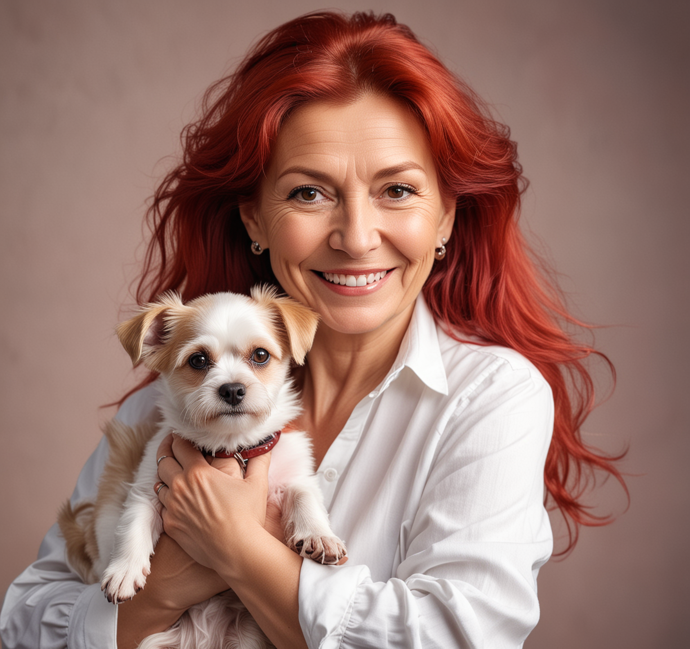
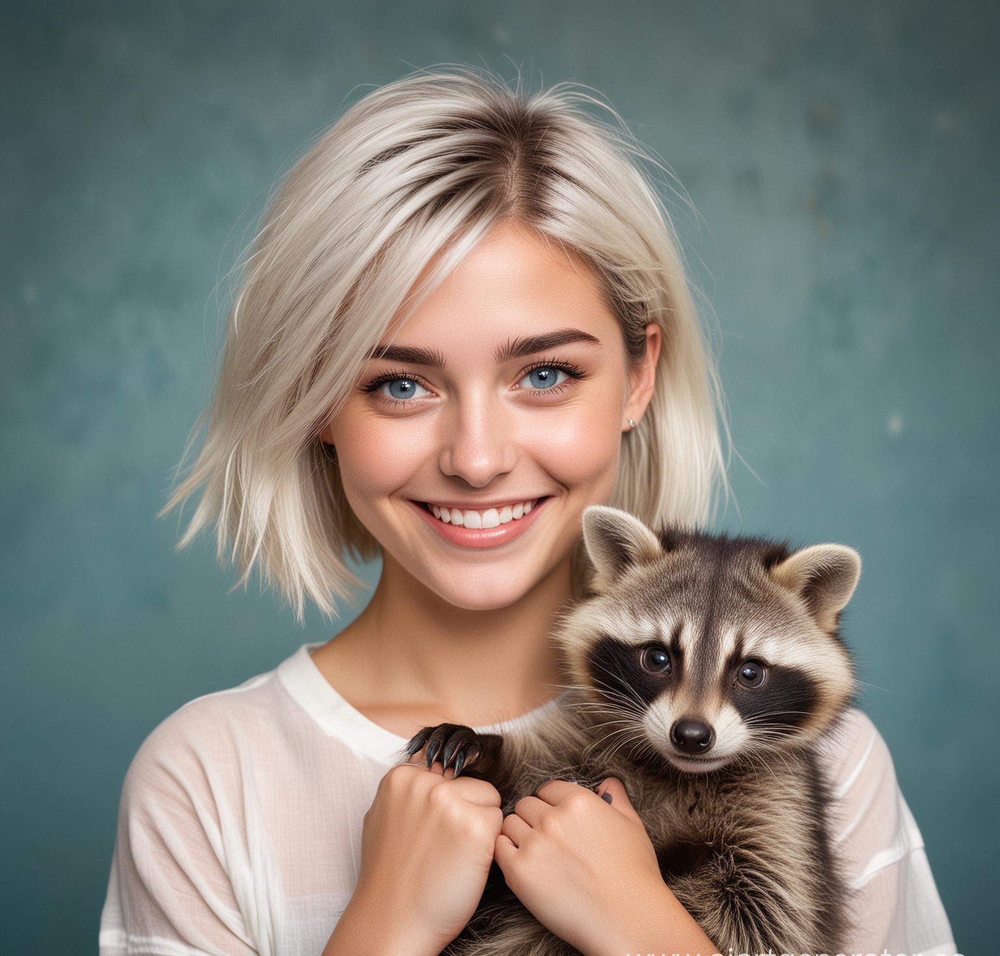
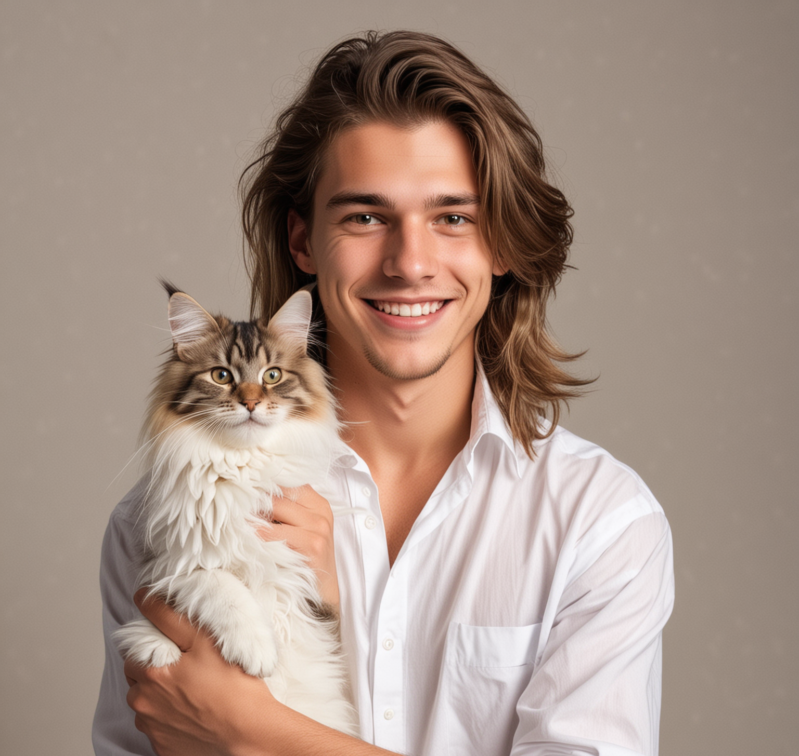

Жарка Антонина Олеговна
1969
Директор
Жарка Антонина Олеговна является создателем и директором приюта Милая Будка. Она создала вместе со своей семьёй приют в 2022 году. С тех пор она усердно работает для своих животных.

Жарко Екатерина Павловна
1998
Заместитель директора
Жарко Екатерина Павловна является одним из создателей приюта Милая Будка. Работает по большей степени с документами, но так же старается уделять время животным.

Сидоров Андрей Дмитриевич
1993
Дрессировщик
Сидоров Андрей Дмитриевич является дрессировщиком с 8-летним стажем работы. Адрей следит за животными, за их питанием, самочувствием. Так же занимается их дрессировкой.